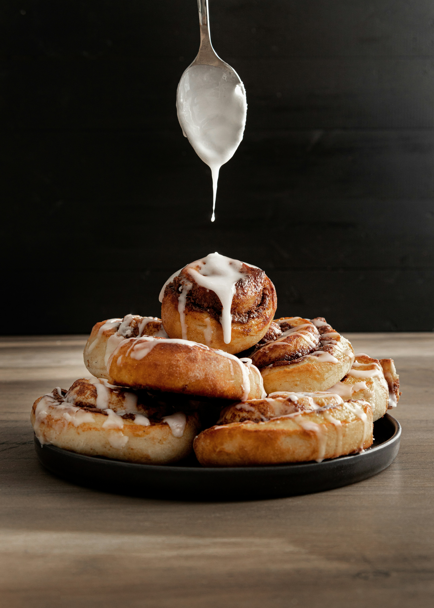

This recipe is my adaptation of “Clone of a Cinnabon” by Marsha Fernandez, originally published on Allrecipes.
It is inspired by the famous Cinnabon-style cinnamon rolls and combines soft, fluffy yeast dough with a sweet and buttery cinnamon filling.
I chose this recipe as part of my Odin Recipes project to practice my HTML skills while creating a recipe page.

Pour the warm milk into a large bowl. Sprinkle in the yeast and a teaspoon of the sugar. Let it sit for 10 minutes.
In a separate bowl, whisk together the eggs, melted butter, and the remaining sugar. Add this mixture to the yeast mixture. Gradually add the flour and salt, mixing until a dough forms. Knead the dough on a floured surface for about 5–7 minutes, until smooth and elastic.
Knead the dough for 8 minutes by hand, or about 5–7 minutes with a stand mixer using a dough hook. The dough should be smooth and elastic and only slightly sticky.
Place the dough in a lightly greased bowl and cover it with a clean kitchen towel or plastic wrap. Leave it in a warm place for about 1 hour, or until the dough has doubled in size.
While the dough is rising, prepare the filling. Mix the softened butter, brown sugar, and cinnamon in a bowl until you have a smooth and spreadable mixture.
Once the dough has doubled in size, place it on a lightly floured surface. Roll it into a large rectangle.
Spread the cinnamon filling evenly over the entire surface of the dough, leaving a small border around the edges.
Starting from one of the longer sides, tightly roll the dough into a log. Cut the log into equal-sized pieces using a sharp knife.
Place the rolls into a greased baking dish, leaving a little space between them. Cover and let them rise for another 30–45 minutes.
Preheat the oven to 180°C. Bake the rolls for approximately 20–25 minutes, or until they are golden brown on top.
Remove the cinnamon rolls from the oven and let them cool slightly. Serve warm and enjoy!